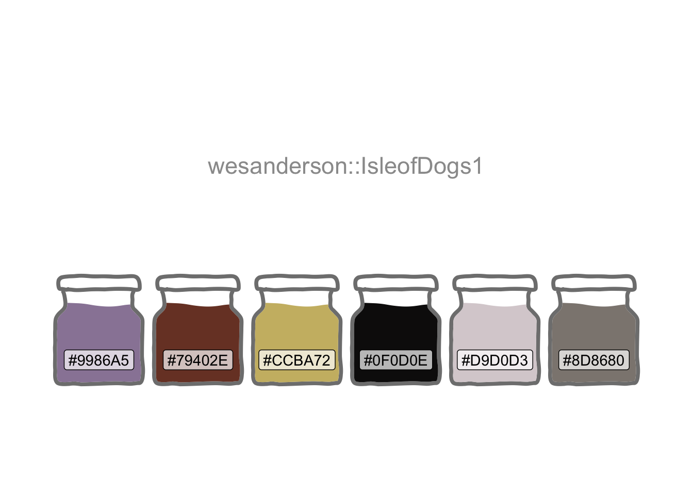

Plots Thicken

One could think of data science as “art grounded in facts”. It tells a story through visualisation. Both story and visualisation rely on a good plot. And an abundance of those has evolved over time. Many have their own dedicated Wikipedia page
Which generate the most interest? How is the interest trending over time? Let’s build an interactive app to find out.
theme_set(theme_bw())
pal_name <- "wesanderson::IsleofDogs1"
pal <- paletteer_d(pal_name)
display_palette(pal, pal_name)
I’m going to start by harvesting some data from Wikipedia’s Statistical charts and diagrams category. I can use this to build a list of all chart types which have a dedicated Wikipedia article page. Using rvest (Wickham 2022) inside the app ensures it will respond to any newly-created articles.
charts <-
tibble(
chart = read_html(str_c(
"https://en.wikipedia.org/wiki/",
"Category:Statistical_charts_and_diagrams"
)) |>
html_elements(".mw-category-group a") |>
html_text()
)The page-view data comes from the Wikimedia API. A function wrapped around {httr2} (Wickham 2026) calls the endpoint directly, so I can later iterate through a subset of the list established in the prior code chunk. This replaces the {pageviews} package, which has no WebAssembly build – a detail that matters now the app runs in the browser rather than on a server.
pv <- function(article) {
request("https://wikimedia.org/api/rest_v1/metrics/pageviews/per-article") |>
req_url_path_append(
"en.wikipedia",
"all-access",
"user",
# URLencode: wasm curl shim rejects unencoded spaces in article names
URLencode(article, reserved = TRUE),
"daily",
"2015070100",
str_c(format(today(), "%Y%m%d"), "00")
) |>
req_perform() |>
resp_body_json(simplify = TRUE) |>
pluck("items") |>
as_tibble() |>
mutate(date = ymd(str_sub(timestamp, 1, 8))) |>
select(article, date, views)
}I want an input selector so that a user can choose plot types for comparison. I also want to provide user control of the y-axis scale. A combination of fixed and log10 is better for comparing plots. Free scaling reveals more detail in the individual trends.
The UI was originally laid out with {gridlayout}. It is now built with {bslib} (Chang et al. 2022)’s own page_sidebar(), which has the happy side-effect that every package in the app has a pre-built WebAssembly binary.
ui <- page_sidebar(
theme = bs_theme(bootswatch = "simplex", primary = "#9986A5"),
title = "Plot Plotter",
# Shinylive/WebR workaround: bslib's collapse-toggle stays in normal flow
# inside main, starving the fill layout (plot renders at zero height).
# Pin it until fixed upstream (bslib JS never repositions it in WebR).
tags$style(
".bslib-page-main .collapse-toggle {
position: absolute; top: calc(var(--_icon-size, 1rem) / 2);
right: var(--_icon-size, 1rem); height: var(--_icon-button-size, 2rem);
width: var(--_icon-button-size, 2rem); display: flex;
align-items: center; justify-content: center; z-index: 1000;
border: none; padding: 0;
}"
),
sidebar(
open = "desktop",
card(
card_header("Options"),
card_body(
dateRangeInput(
"dates",
label = "Date range",
start = "2015-07-01",
end = NULL
),
selectizeInput(
inputId = "article",
label = "Chart type",
choices = charts$chart,
selected = c(
"Violin plot",
"Dendrogram",
"Histogram",
"Pie chart",
"Q–Q plot",
"Error bar"
),
options = list(maxItems = 8),
multiple = TRUE
),
selectInput(
inputId = "scales",
label = "Fixed or free y-axis",
choices = c("Fixed" = "fixed", "Free" = "free"),
selected = "fixed"
),
selectInput(
inputId = "log10",
label = "Log 10 or normal y-axis",
choices = c("Log 10" = "log10", "Normal" = "norm"),
selected = "log10"
)
)
)
),
card(
full_screen = TRUE,
plotOutput("line")
)
)The server component outputs a faceted ggplot.
server <- function(input, output, session) {
pv_df <- reactive({
req(input$article)
input$article |>
map(pv) |>
list_rbind() |>
mutate(article = str_replace_all(article, "_", " ")) |>
filter(date >= input$dates[1], date <= input$dates[2])
})
output$line <- renderPlot({
p <- ggplot(
pv_df(),
aes(date, views, colour = article)
) +
geom_line() +
geom_smooth(colour = pal[7]) +
scale_colour_manual(values = pal) +
facet_wrap(~article, nrow = 1, scales = input$scales) +
theme(
legend.position = "none",
axis.text.x = element_text(angle = 45, hjust = 1),
plot.margin = margin(1, 1, 1, 1, "cm")
) +
labs(
x = NULL,
y = NULL,
caption = "\nSource: Daily Wikipedia Article Page Views"
)
switch(
input$log10,
norm = p,
log10 = p +
scale_y_log10(
labels = label_number(scale_cut = cut_short_scale())
)
)
})
}
shinyApp(ui, server)And here’s the app embedded with the {shinylive} (Chang et al. 2026) Quarto extension. R and {shiny} run entirely in your browser via WebR, so the app needs no server at all – it will work offline, straight from the static page. Be patient on first load: R itself and the packages are downloaded into the browser before the app appears.
#| '!! shinylive warning !!': |
#| shinylive does not work in self-contained HTML documents.
#| Please set `embed-resources: false` in your metadata.
#| standalone: true
#| components: [viewer]
#| viewerHeight: 700
library(conflicted)
library(tidyverse)
library(shiny)
library(bslib)
library(rvest)
library(scales)
library(httr2)
library(wesanderson)
conflict_prefer_all("dplyr", quiet = TRUE)
charts <-
tibble(
chart = read_html(str_c(
"https://en.wikipedia.org/wiki/",
"Category:Statistical_charts_and_diagrams"
)) |>
html_elements(".mw-category-group a") |>
html_text()
)
pv <- function(article) {
request("https://wikimedia.org/api/rest_v1/metrics/pageviews/per-article") |>
req_url_path_append(
"en.wikipedia",
"all-access",
"user",
# URLencode: wasm curl shim rejects unencoded spaces in article names
URLencode(article, reserved = TRUE),
"daily",
"2015070100",
str_c(format(today(), "%Y%m%d"), "00")
) |>
req_perform() |>
resp_body_json(simplify = TRUE) |>
pluck("items") |>
as_tibble() |>
mutate(date = ymd(str_sub(timestamp, 1, 8))) |>
select(article, date, views)
}
theme_set(theme_bw())
pal <- wes_palette(8, name = "IsleofDogs1", type = "continuous")
ui <- page_sidebar(
theme = bs_theme(bootswatch = "simplex", primary = "#9986A5"),
title = "Plot Plotter",
# Shinylive/WebR workaround: bslib's collapse-toggle stays in normal flow
# inside main, starving the fill layout (plot renders at zero height).
# Pin it until fixed upstream (bslib JS never repositions it in WebR).
tags$style(
".bslib-page-main .collapse-toggle {
position: absolute; top: calc(var(--_icon-size, 1rem) / 2);
right: var(--_icon-size, 1rem); height: var(--_icon-button-size, 2rem);
width: var(--_icon-button-size, 2rem); display: flex;
align-items: center; justify-content: center; z-index: 1000;
border: none; padding: 0;
}"
),
sidebar(
open = "desktop",
card(
card_header("Options"),
card_body(
dateRangeInput("dates",
label = "Date range",
start = "2015-07-01",
end = NULL
),
selectizeInput(
inputId = "article",
label = "Chart type",
choices = charts$chart,
selected = c(
"Violin plot",
"Dendrogram",
"Histogram",
"Pie chart",
"Q–Q plot",
"Error bar"
),
options = list(maxItems = 8),
multiple = TRUE
),
selectInput(
inputId = "scales",
label = "Fixed or free y-axis",
choices = c("Fixed" = "fixed", "Free" = "free"),
selected = "fixed"
),
selectInput(
inputId = "log10",
label = "Log 10 or normal y-axis",
choices = c("Log 10" = "log10", "Normal" = "norm"),
selected = "log10"
)
)
)
),
card(
full_screen = TRUE,
plotOutput("line")
)
)
server <- function(input, output, session) {
pv_df <- reactive({
req(input$article)
input$article |>
map(pv) |>
list_rbind() |>
mutate(article = str_replace_all(article, "_", " ")) |>
filter(date >= input$dates[1], date <= input$dates[2])
})
output$line <- renderPlot({
p <- ggplot(
pv_df(),
aes(date, views, colour = article)
) +
geom_line() +
geom_smooth(colour = pal[7]) +
scale_colour_manual(values = pal) +
facet_wrap(~article, nrow = 1, scales = input$scales) +
theme(
legend.position = "none",
axis.text.x = element_text(angle = 45, hjust = 1),
plot.margin = margin(1, 1, 1, 1, "cm")
) +
labs(
x = NULL, y = NULL,
caption = "\nSource: Daily Wikipedia Article Page Views"
)
switch(input$log10,
norm = p,
log10 = p + scale_y_log10(
labels = label_number(scale_cut = cut_short_scale())
)
)
})
}
shinyApp(ui, server)Note the utility of selecting the right scaling. The combination of “fixed” and “normal” reveals what must have been “world histogram day” on July 27th 2015, but little else.
Turning non-interactive code into an app sharpens the mind’s focus on performance. And profvis (Chang et al. 2020), integrated into RStudio via the profile menu option, is a wonderful “tool for helping you understand how R spends its time”.
My first version of the app was finger-tappingly slow.
Profvis revealed the main culprit to be the pre-loading of a dataframe with the page-view data for all chart types (there are more than 100). Profiling prompted the more efficient “reactive” approach of loading the data only for the user’s selection (maximum of 8).
Profiling also showed that rounding the corners of the plot.background with additional grid-package code was expensive. App efficiency felt more important than minor cosmetic detailing (to the main panel to match the theme’s side panel). And most users would probably barely notice (had I not drawn attention to it here).
R Toolbox
Summarising below the packages and functions used in this post enables me to separately create a toolbox visualisation summarising the usage of packages and functions across all posts.
used_here("app.R")| Package | Function |
|---|---|
| base | c[3], format[1], library[8], list[1], switch[1] |
| bslib | bs_theme[1], card[2], card_body[1], card_header[1], page_sidebar[1], sidebar[1] |
| conflicted | conflict_prefer_all[1] |
| dplyr | filter[1], mutate[2], select[1] |
| ggplot2 | aes[1], element_text[1], facet_wrap[1], geom_line[1], geom_smooth[1], ggplot[1], labs[1], margin[1], scale_colour_manual[1], scale_y_log10[1], theme[1], theme_bw[1], theme_set[1] |
| httr2 | req_perform[1], req_url_path_append[1], request[1], resp_body_json[1] |
| lubridate | today[1], ymd[1] |
| purrr | list_rbind[1], map[1], pluck[1] |
| rvest | html_elements[1], html_text[1] |
| scales | cut_short_scale[1], label_number[1] |
| shiny | dateRangeInput[1], plotOutput[1], reactive[1], renderPlot[1], req[1], selectInput[2], selectizeInput[1], shinyApp[1] |
| stats | var[4] |
| stringr | str_c[2], str_replace_all[1], str_sub[1] |
| tibble | as_tibble[1], tibble[1] |
| utils | URLencode[1] |
| wesanderson | wes_palette[1] |
| xml2 | read_html[1] |